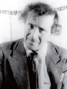

Marc Chagall (1887-1985), İncil temalı vitray camlar, duvar resimleri ve duvar halıları ile bilinir. Doğmuş olduğu küçük Beyaz Rus köyünü andıran pek çok resim yaptı.

Asıl adı Moishe Zakharovich Shagalov olan Chagall, o zamanlar Rus İmparatorluğu’nun parçası olan Vitebsk’te doğdu. Yahudi bir ailenin dokuz çocuğunun en büyüğüydü. Evinin yakınında sanat okuduktan sonra, Leon Bakst gözetiminde öğrenim gördüğü St. Petersburg’a taşındı.
1911’de Chagall, Amedeo Modigliani, Chaim Soutine ve Robert Delaunay adlı sanatçılarla tanıştığı Paris’e taşındı. Bu dönemden parlak renkli, geometrik kompozisyonları, kendisini asla herhangi bir yenilikçi akım ile özdeşleştirmemesine rağmen hem vahşiliğin hem de kübizmin etkisini yansıtır. Bu safhadaki tipik eseri, Rus halk masallarının ve Yahudi atasözlerinin ruhunu çağrıştırırken Vitebsk’teki hayatı kübist bir tarzda betimleyen Ben ve Köy (1911) adlı resmidir.
Chagall, Paris’e dönüşüne engel olan I. Dünya Savaşı patlak verdiği zaman memleketini ziyaret ediyordu. 1915’te sonraları en sevdiği konularından biri olan Bella Rosenfeld ile evlendi. Rus Devrimi’nden sonra, Vitebsk bölgesinden sorumlu sanat daire başkanı olarak atandı. 1919’da Vera Yermoyaleva ile yer değiştirdiği zaman, Yeni Devlet Oda Tiyatrosu’nda Shalom Aleichem için kurgular tasarladığı Moskova’ya gitti.
1922’den 1923’e kadar Chagall, Berlin’e gitti ve oradan da Nikolai Gogol’ün Ölü Canlar’ı, Jean de La Fontaine’nin Fabllar’ı ve İncil için görsellemeler üzerinde çalıştığı Paris’e gitti. 1941’de Chagall, Naziler’den kaçmak için Amerika Birleşik Devletleri’ne iltica başvurusunda bulundu. 1944’de eşinin ölümünden derinden etkilenip, onun ruhuyla temas kurabilmek için kendisinin resimlerini yaptı.
II. Dünya Savaşı’ndan sonra 1948’de Chagall, Paris’e döndü. İki yıl sonra Calvaire Şapeli için on yedi büyük resim üzerinde çalıştığı Fransa’nın güneyindeki Vence’e taşındı. Kariyerinin sonlarına doğru Metz Katedrali, Chicago Sanat Enstitüsü, Birleşmiş Milletler ve İbrâni Üniversitesi için vitray camlar tasarladı. 1973’te Marc Chagall Ulusal İncil Mesajları Müzesi, Nice’te açıldı. Bugün eserleri, dünya çapında büyük müzelerde görülebilir.
EK BİLGİLER:
1, 2005’te popüler müzisyen Tori Amos, Chagall’ın bir dizi taş baskı resimlerinden ilham aldığı liriklere sahip “Garlands” adlı bir albüm çıkardı.
2. Chagall, “Bütün renkler komşularının arkadaşı ve zıtlarının sevgilisidir.” diye belirtti.